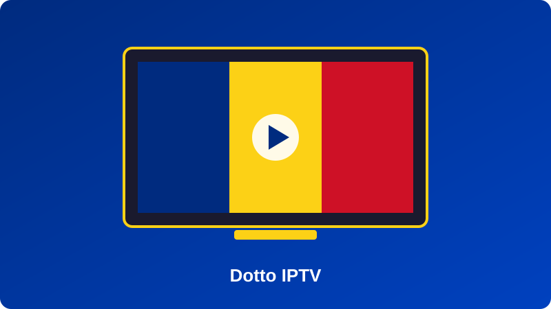
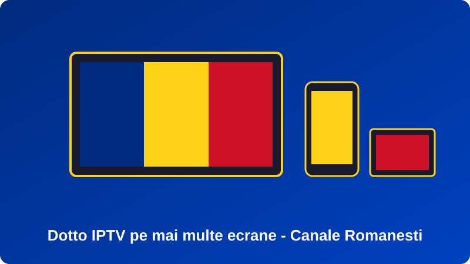

Daca ai cautat dotto iptv, probabil vrei sa afli rapid despre ce este vorba si daca merita sa folosesti un astfel de serviciu pentru canalele romanesti preferate. Intrebarea este corecta: pe internet exista zeci de nume de aplicatii si liste, iar multe dintre ele promit mult si ofera putin. Stirile de seara, filmul de weekend sau meciul cu prietenii ar trebui sa porneasca imediat, fara blocaje si fara surprize.
Termenul dotto iptv este cautat de utilizatori care vor televiziune prin internet, dar informatiile oficiale lipsesc adesea sau sunt greu de verificat. De aceea, in loc sa promitem lucruri despre un nume anume, explicam ce trebuie sa verifici la orice serviciu de acest tip: canale, stabilitate, suport, siguranta si pret. Asa poti lua o decizie buna, indiferent de numele pe care il cauti.
In acest ghid vezi cum functioneaza IPTV, ce canale romanesti merita sa ceri, ce riscuri au listele necunoscute si cum alegi un furnizor de incredere. Echipa Romania IPTV lucreaza zilnic cu familii din Romania si din diaspora, iar sfaturile de mai jos vin din situatii reale intalnite la clienti.

Cuprins
- Ce inseamna dotto iptv si de ce este cautat
- Cum functioneaza televiziunea prin internet
- Ce canale romanesti ar trebui sa primesti
- Ce verifici inainte sa folosesti dotto iptv sau orice serviciu similar
- Cum configurezi un serviciu IPTV pe televizor, telefon sau box
- Riscurile listelor si aplicatiilor necunoscute
- Dotto iptv pentru diaspora romaneasca
- Cum alegi un furnizor de incredere
- Intrebari frecvente
- Concluzie
Ce inseamna dotto iptv si de ce este cautat
Cand cineva scrie dotto iptv in motorul de cautare, de obicei vrea una dintre trei lucruri: o aplicatie pentru a viziona canale, o lista de canale sau un abonament la televiziune prin internet. Toate trei au in comun tehnologia IPTV, adica Internet Protocol Television, in care imaginea ajunge printr-o conexiune la net, nu prin antena, cablu sau satelit.
De ce cauta romanii astfel de servicii
Motivul principal este flexibilitatea. Un romanesc plecat la munca in Germania, Italia sau Spania nu poate folosi cablul din tara, dar poate folosi o aplicatie IPTV pe orice ecran. Familiile din Romania apreciaza si ele ca nu mai sunt legate de contracte lungi si de tehnicieni.
Ce informatii lipsesc de multe ori
La nume putin cunoscute, precum dotto iptv, gasesti rar detalii clare despre lista de canale, pret sau suport. Fara aceste informatii, riscul este sa platesti pentru ceva ce nu poti verifica. O regula simpla: nu te baza pe promisiuni, ci pe un test real facut pe aparatul tau.
Cum functioneaza televiziunea prin internet
Un furnizor primeste canalele la sursa, le comprima si le trimite prin servere. Aplicatia ta cere fluxul, il decodeaza si afiseaza imaginea in cateva fractiuni de secunda. Indiferent daca folosesti dotto iptv sau alt serviciu, principiul este acelasi.
Ce echipament iti trebuie
- un Smart TV, un Android TV box, un Firestick, un telefon, o tableta sau un laptop;
- o aplicatie IPTV instalata din magazinul oficial;
- datele de acces primite de la furnizor, de obicei un link sau un cont.
Ce viteza de internet este necesara
Pentru HD sunt suficienti aproximativ 10 Mbps, iar pentru 4K este bine sa ai 25 Mbps disponibili. Daca mai multe persoane folosesc reteaua in acelasi timp, aduna consumul fiecarui ecran. Seara, in orele de varf, retelele sunt mai incarcate, asa ca testul cel mai relevant se face atunci.
Wi-Fi sau cablu de retea
Cablul Ethernet ramane varianta cea mai stabila pentru televizorul din sufragerie. Pe Wi-Fi, apropie routerul sau foloseste banda de 5 GHz pentru a evita blocajele in timpul meciurilor sau al filmelor.
Un aparat modern, o retea curata si o aplicatie actualizata fac diferenta intre o seara placuta si una plina de blocaje. Daca televizorul tau este vechi, un mic box Android conectat la HDMI rezolva problema la un cost redus, fara sa schimbi televizorul.
Ce canale romanesti ar trebui sa primesti
Orice serviciu de tip dotto iptv ar trebui sa fie judecat dupa canalele pe care le ofera, nu dupa nume. Pentru publicul roman, lista minima include urmatoarele categorii, iar lista exacta difera in functie de furnizor.
Stiri, filme si divertisment
Canalele de stiri, posturile generaliste, filmele, serialele si emisiunile de divertisment sunt baza ofertei. Multe servicii adauga si arhiva, astfel incat sa poti revedea o emisiune pierduta.
Sport, copii si muzica
Fanii de fotbal cauta meciurile din campionatul intern si cupele europene, iar copiii au nevoie de desene animate in limba romana. Cu un singur abonament poti acoperi gusturile tuturor din casa.
Calitate HD, FHD si 4K
Rezolutia conteaza mai ales pe ecranele mari. Cauta canale HD si FHD si, unde exista sursa, 4K. Imaginea clara face diferenta la sport si la filmele de seara.
Cere intotdeauna lista completa de canale inainte sa platesti. Daca furnizorul nu o poate trimite, ia-o ca pe un semnal de alarma.
Cum compari ofertele fara sa te pierzi in detalii
Fa o lista scurta cu trei lucruri fara de care nu poti trai: canalele de stiri, postul preferat de filme si sportul. Cere apoi acces de test la fiecare furnizor si noteaza ce a mers bine in aceeasi seara. Dupa cateva zile ai o imagine reala, nu doar promisiuni. Aceasta metoda functioneaza pentru dotto iptv si pentru orice alta oferta, iar rezultatul este o decizie bazata pe experienta ta, nu pe reclame.
Nu uita sa verifici si ghidul de programe, adica lista cu emisiunile din fiecare zi. Un ghid actualizat te ajuta sa gasesti rapid ce vrei sa vezi si sa inregistrezi emisiunile importante, daca aplicatia permite acest lucru. De asemenea, verifica daca poti muta abonamentul de pe un aparat pe altul fara costuri, pentru ca multe familii isi schimba televizorul sau telefonul in timp.
Ce verifici inainte sa folosesti dotto iptv sau orice serviciu similar
Inainte sa te hotarasti, uita-te la cateva criterii simple. Ele te ajuta sa compari dotto iptv cu alte oferte fara sa te bazezi pe reclame.
| Criteriu | Serviciu de incredere | Sursa necunoscuta |
|---|---|---|
| Test gratuit | Da, clar si fara card | Lipseste sau cere plata |
| Suport | Raspuns rapid in romana | Fara contact real |
| Lista de canale | Actualizata si verificabila | Linkuri care mor |
| Pret | Transparent | Costuri ascunse |
Stabilitatea in orele de varf
Un serviciu bun trebuie sa mearga fluid si la ora 20:00, cand mii de utilizatori sunt conectati. Testeaza exact atunci, nu dimineata.
Suportul in limba romana
Cand ceva nu merge, vrei sa scrii si sa primesti raspuns repede, in limba ta. Un contact pe WhatsApp este un avantaj clar fata de formularele care nu primesc niciodata raspuns.
Cum configurezi un serviciu IPTV pe televizor, telefon sau box
Configurarea este mai simpla decat pare. Nu ai nevoie de cunostinte tehnice, doar de cativa pasi facuti cu atentie, la fel ca in cazul unui serviciu dotto iptv.
Pasii de baza
- Alege aparatul si verifica daca accepta aplicatii IPTV.
- Instaleaza aplicatia recomandata de furnizor.
- Introdu datele de acces primite pe WhatsApp.
- Asteapta incarcarea listei de canale si alege primul program.
- Seteaza favoritele pentru a ajunge repede la canalele tale.
Probleme frecvente si solutii rapide
Daca imaginea se blocheaza, reporneste aplicatia si routerul. Daca lipsesc canale, actualizeaza lista din aplicatie. Daca problema persista, scrie echipei de suport si descrie exact ce vezi pe ecran.
Poti opri un film pe televizor si il poti continua pe telefon, poti urmari un meci in drum spre serviciu si poti lasa copiii sa se uite la desene pe tableta. Pentru familiile care se muta des, aceasta libertate valoreaza mai mult decat orice reducere.

Riscurile listelor si aplicatiilor necunoscute
Cautarea unui dotto iptv gratuit duce adesea spre liste publice si fisiere de pe forumuri. Acestea au probleme serioase: linkurile mor in cateva zile, calitatea este slaba, iar unele pagini cer instalari suspecte.
Alternativa sigura: testul gratuit
Un furnizor transparent iti ofera un acces de test limitat in timp. Il poti folosi pentru a verifica lista de canale, stabilitatea si calitatea imaginii inainte sa platesti. Astfel eviti surprizele si ai de la inceput un contact real pentru suport.
Este legal IPTV?
Tehnologia in sine este legala. Important este sa alegi un furnizor transparent si sa eviti listele anonime, fara sursa clara.
Dotto iptv pentru diaspora romaneasca
Pentru romanii din afara tarii, orice solutie de tip dotto iptv trebuie sa rezolve o problema veche: dorul de casa. Canalele de stiri iti arata ce se intampla in tara, iar emisiunile si filmele iti aduc sentimentul de acasa. Familiile cu copii apreciaza desenele animate in limba materna, care ajuta la pastrarea limbii.
Functioneaza in orice tara
Atat timp cat ai internet, serviciul merge in Germania, Italia, Spania, Anglia sau Belgia. Daca vrei sa vezi cum arata ofertele pentru alte comunitati, poti consulta greek iptv sau tilaa iptv pentru comparatie.
Mai multe ecrane in aceeasi casa
Multe familii vor televizorul in sufragerie si un telefon sau o tableta in alta camera. Verifica de la inceput cate conexiuni simultane permite abonamentul, ca sa nu apara conflicte seara.
Un detaliu important pentru romanii din diaspora este diferenta de fus orar. Daca locuiesti in Marea Britanie, emisiunile de seara din Romania ajung cu doua ore mai devreme, iar un serviciu cu arhiva te scapa de grija de a pierde ceva. Sportul in direct ramane insa la ora lui, asa ca stabilitatea conexiunii conteaza si mai mult in zilele cu meci. Pentru lunile in care calatoresti, e util ca aplicatia sa mearga si pe telefon, ca sa ai televiziunea cu tine in tren sau in vacanta.
Cum alegi un furnizor de incredere
Piata este plina de oferte, iar diferentele reies din detalii. Cand cauti dotto iptv sau o alternativa, uita-te la cateva criterii si verifica-le inainte sa te hotarasti.
Criterii care conteaza
- test gratuit sau perioada de proba clara;
- suport in limba romana, rapid si pe WhatsApp;
- lista de canale actualizata si stabilitate dovedita;
- pret transparent, fara costuri ascunse;
- compatibilitate cu aparatele pe care le ai deja.
Ce oferim noi
La Romania IPTV punem accent pe canale romanesti stabile, configurare ajutata si raspuns rapid. Daca vrei sa citesti mai mult, vezi si digital iptv, digi iptv romania si digi tv iptv. Pentru o privire de ansamblu, citeste ghidul iptv romania.
Sfaturi finale inainte sa incepi
Noteaza canalele pe care le urmaresti cel mai des si cere-le explicit in perioada de test. Verifica sunetul, subtitrarile si fluiditatea la sport. Discuta cu familia despre ecranele de care aveti nevoie si alege pachetul potrivit, nu cel mai mare. Foloseste parole puternice, nu da datele de acces altor persoane si instaleaza aplicatiile doar din magazine oficiale.
Intrebari frecvente despre dotto iptv
Ce este dotto iptv?
Este o expresie cautata de utilizatori pentru un serviciu sau o aplicatie de televiziune prin internet. Inainte sa o folosesti, verifica ce canale ofera, cine o administreaza si cum poti primi suport.
Pot vedea canale romanesti in strainatate cu dotto iptv?
Da, daca serviciul include canalele dorite. IPTV depinde de internet, nu de adresa, deci functioneaza in orice tara, inclusiv pentru diaspora.
Ce viteza de internet este necesara?
Aproximativ 10 Mbps pentru HD si 25 Mbps pentru 4K. Daca folosesti mai multe ecrane in acelasi timp, aduna cerintele fiecaruia.
Cum testez un serviciu IPTV inainte sa platesc?
Cere un acces de test si verifica seara, in orele de varf, canalele de stiri, filme si sport. La Romania IPTV primesti testul gratuit pe WhatsApp.
Pe ce aparate merge un serviciu ca dotto iptv?
Pe Smart TV, Android TV box, Firestick, telefoane si tablete Android sau iOS si pe laptopuri, in functie de aplicatia folosita.
Este sigur sa descarc o aplicatie IPTV necunoscuta?
Instaleaza aplicatii doar din magazine oficiale si evita fisierele primite de la necunoscuti. Nu da niciodata date de card pe pagini care nu inspira incredere.
Ce fac daca un canal nu porneste?
Reporneste aplicatia si routerul, verifica conexiunea la internet, apoi scrie echipei de suport. La noi raspundem in limba romana pe WhatsApp.
Care este alternativa daca nu gasesc un furnizor de incredere?
Alege un furnizor cu pret transparent, suport rapid si lista de canale romanesti clara, cum este Romania IPTV.
Testeaza gratuit canalele romanesti
Scrie-ne pe WhatsApp si primesti acces de test, fara card si fara contract.
Cere testul pe WhatsAppConcluzie
Pe scurt, dotto iptv este un termen cautat pentru televiziune prin internet, dar important este ce primesti concret: canale romanesti stabile, suport rapid si un test real. Evita listele gratuite instabile, testeaza serviciul seara si alege un furnizor care raspunde in limba romana.
Daca vrei sa incerci, scrie-ne pe WhatsApp si porneste-ti canalele cu Romania IPTV.